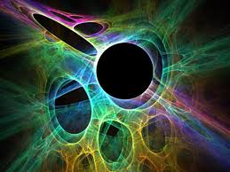

WHAT IS STRING THEORY?
In physics, string theory is a theoretical framework in which the point-like particles of particle physics are replaced by one-dimensional objects called strings
USE IN MODERN COSMIC MAP
In the 20th century, two theoretical frameworks emerged for formulating the laws of physics. The first is Albert Einstein's general theory of relativity, a theory that explains the force of gravity and the structure of spacetime at the macro-level. The other is quantum mechanics which is a completely different formulation to describe physical phenomena using the known probability principles at the micro-level. By the late 1970s, these two frameworks had proven to be sufficient to explain most of the observed features of the universe, from elementary particles to atoms to the evolution of stars and the universe as a whole.[1]
In spite of these successes, there are still many problems that remain to be solved. One of the deepest problems in modern physics is the problem of quantum gravity.[1] The general theory of relativity is formulated within the framework of classical physics, whereas the other fundamental forces are described within the framework of quantum mechanics. A quantum theory of gravity is needed in order to reconcile general relativity with the principles of quantum mechanics, but difficulties arise when one attempts to apply the usual prescriptions of quantum theory to the force of gravity.[2] In addition to the problem of developing a consistent theory of quantum gravity, there are many other fundamental problems in the physics of atomic nuclei, black holes, and the early universe.[a]
String theory is a theoretical framework that attempts to address these questions and many others. The starting point for string theory is the idea that the point-like particles of particle physics can also be modeled as one-dimensional objects called strings. String theory describes how strings propagate through space and interact with each other. In a given version of string theory, there is only one kind of string, which may look like a small loop or segment of ordinary string, and it can vibrate in different ways. On distance scales larger than the string scale, a string will look just like an ordinary particle, with its mass, charge, and other properties determined by the vibrational state of the string. In this way, all of the different elementary particles may be viewed as vibrating strings. In string theory, one of the vibrational states of the string gives rise to the graviton, a quantum mechanical particle that carries gravitational force. Thus string theory is a theory of quantum gravity.[3]
One of the main developments of the past several decades in string theory was the discovery of certain 'dualities', mathematical transformations that identify one physical theory with another. Physicists studying string theory have discovered a number of these dualities between different versions of string theory, and this has led to the conjecture that all consistent versions of string theory are subsumed in a single framework known as M-theory.[4]
Studies of string theory have also yielded a number of results on the nature of black holes and the gravitational interaction. There are certain paradoxes that arise when one attempts to understand the quantum aspects of black holes, and work on string theory has attempted to clarify these issues. In late 1997 this line of work culminated in the discovery of the anti-de Sitter/conformal field theory correspondence or AdS/CFT.[5] This is a theoretical result which relates string theory to other physical theories which are better understood theoretically. The AdS/CFT correspondence has implications for the study of black holes and quantum gravity, and it has been applied to other subjects, including nuclear[6] and condensed matter physics.[7][8]
Since string theory incorporates all of the fundamental interactions, including gravity, many physicists hope that it will eventually be developed to the point where it fully describes our universe, making it a theory of everything. One of the goals of current research in string theory is to find a solution of the theory that reproduces the observed spectrum of elementary particles, with a small cosmological constant, containing dark matter and a plausible mechanism for cosmic inflation. While there has been progress toward these goals, it is not known to what extent string theory describes the real world or how much freedom the theory allows in the choice of details.[9]
One of the challenges of string theory is that the full theory does not have a satisfactory definition in all circumstances. The scattering of strings is most straightforwardly defined using the techniques of perturbation theory, but it is not known in general how to define string theory nonperturbatively.[10] It is also not clear whether there is any principle by which string theory selects its vacuum state, the physical state that determines the properties of our universe.[11] These problems have led some in the community to criticize these approaches to the unification of physics and question the value of continued research on these problems.
MULTIPLE DIMENSIONS CONCEPT
In everyday life, there are three familiar dimensions (3D) of space: height, width and length. Einstein's general theory of relativity treats time as a dimension on par with the three spatial dimensions; in general relativity, space and time are not modeled as separate entities but are instead unified to a four-dimensional (4D) spacetime. In this framework, the phenomenon of gravity is viewed as a consequence of the geometry of spacetime.[19]
In spite of the fact that the Universe is well described by 4D spacetime, there are several reasons why physicists consider theories in other dimensions. In some cases, by modeling spacetime in a different number of dimensions, a theory becomes more mathematically tractable, and one can perform calculations and gain general insights more easily.[b] There are also situations where theories in two or three spacetime dimensions are useful for describing phenomena in condensed matter physics.[20] Finally, there exist scenarios in which there could actually be more than 4D of spacetime which have nonetheless managed to escape detection.[21]
One notable feature of string theories is that these theories require extra dimensions of spacetime for their mathematical consistency. In bosonic string theory, spacetime is 26-dimensional, while in superstring theory it is 10-dimensional, and in M-theory it is 11-dimensional. In order to describe real physical phenomena using string theory, one must therefore imagine scenarios in which these extra dimensions would not be observed in experiments.[22]
Visualization of a complex mathematical surface with many convolutions and self intersections.
A cross section of a quintic Calabi–Yau manifold
Compactification is one way of modifying the number of dimensions in a physical theory. In compactification, some of the extra dimensions are assumed to "close up" on themselves to form circles.[23] In the limit where these curled up dimensions become very small, one obtains a theory in which spacetime has effectively a lower number of dimensions. A standard analogy for this is to consider a multidimensional object such as a garden hose. If the hose is viewed from a sufficient distance, it appears to have only one dimension, its length. However, as one approaches the hose, one discovers that it contains a second dimension, its circumference. Thus, an ant crawling on the surface of the hose would move in two dimensions.[24]
Compactification can be used to construct models in which spacetime is effectively four-dimensional. However, not every way of compactifying the extra dimensions produces a model with the right properties to describe nature. In a viable model of particle physics, the compact extra dimensions must be shaped like a Calabi–Yau manifold.[23] A Calabi–Yau manifold is a special space which is typically taken to be six-dimensional in applications to string theory. It is named after mathematicians Eugenio Calabi and Shing-Tung Yau.[25]
Another approach to reducing the number of dimensions is the so-called brane-world scenario. In this approach, physicists assume that the observable universe is a four-dimensional subspace of a higher dimensional space. In such models, the force-carrying bosons of particle physics arise from open strings with endpoints attached to the four-dimensional subspace, while gravity arises from closed strings propagating through the larger ambient space. This idea plays an important role in attempts to develop models of real world physics based on string theory, and it provides a natural explanation for the weakness of gravity compared to the other fundamental forces